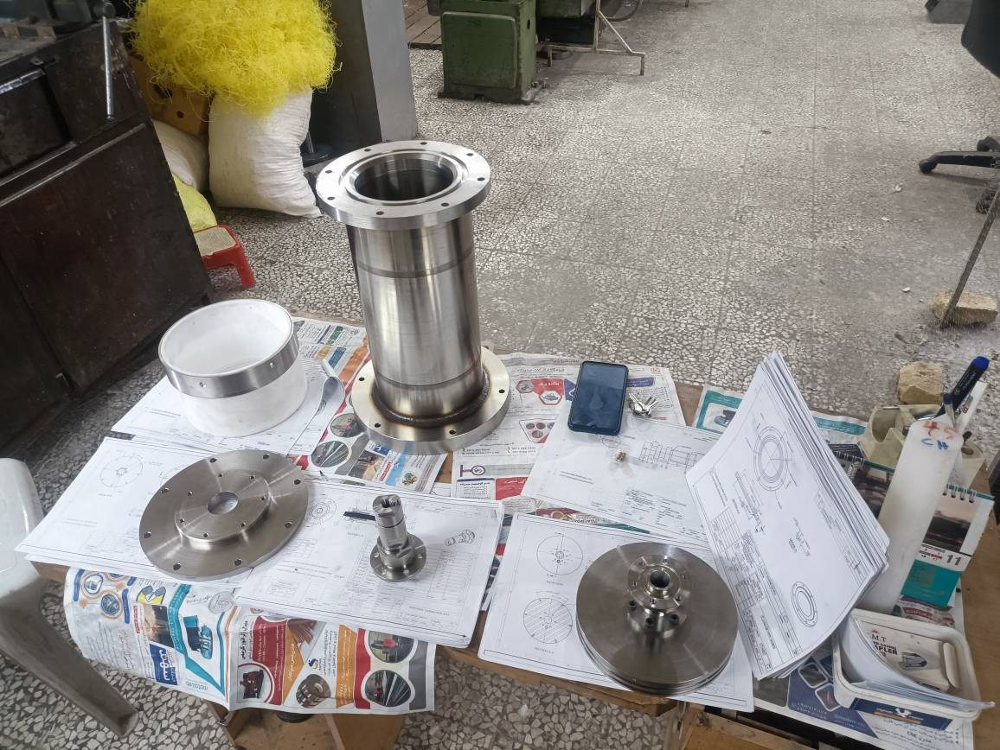
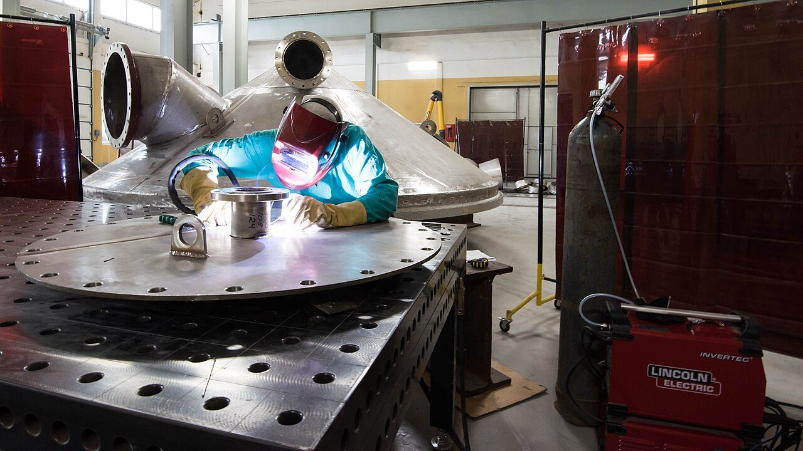
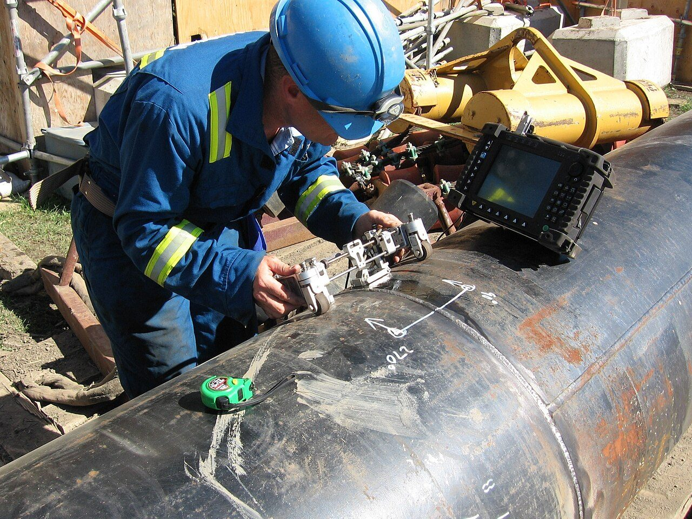

جوشکاری آرگون TIG و MIG
استیل ضدزنگ، آلومینیوم و سازههای جوشی
جوشکاری TIG و MIG روی استیل ضدزنگ و آلومینیوم سری ۶۰۰۰، ساخت و مونتاژ سازههای جوشی برای دستگاهها و ساخت سازههای پلتفرمی بزرگ؛ با آزمونهای جوش VT، PT و Phased Array به درخواست شما، از نقشه تا تحویل.
- روشها: جوش آرگون TIG و MIG
- جنس: استیل ضدزنگ، آلومینیوم سری 6000
- آزمون جوش: VT · PT · PAUT و آزمونهای دیگر طبق نیاز

جوشکاری آرگون، یعنی جوش TIG و MIG، روش اصلی اتصال استیل ضدزنگ و آلومینیوم در ساخت دستگاه و تجهیزات صنعتی است. هایپرفب در تهران جوشکاری TIG و MIG روی استیل ضدزنگ و آلومینیوم سری ۶۰۰۰ و ساخت سازههای جوشی را بر اساس نقشهی شما، از نقشه تا تحویل و با آزمونهای VT، PT و PAUT به درخواست شما، انجام میدهد. قیمت بر اساس جنس، طول و نوع جوش، ابعاد سازه و آزمونهای درخواستی اعلام میشود؛ مشاوره: ۰۹۹۶۲۲۳۳۸۹۸.
- خدمت
- جوشکاری آرگون TIG و MIG، ساخت و مونتاژ سازههای جوشی
- جنس
- استیل ضدزنگ، آلومینیوم سری ۶۰۰۰ (مثل ۶۰۶۱ و ۶۰۶۳)
- آزمون جوش
- VT، PT، PAUT و آزمونهای دیگر، به درخواست مشتری
- سابقه
- صنایع پزشکی و دریایی، سازههای پلتفرمی بزرگ
- قیمتگذاری
- بر اساس جنس، طول و نوع جوش، ابعاد سازه و آزمونها
- سفارش
- تلفنی: ۰۹۹۶۲۲۳۳۸۹۸ · بله: @hyperfab_pro · تهران
جوشکاری آرگون TIG و MIG چیست و هایپرفب چه میسازد؟
جوشکاری آرگون، یعنی TIG (GTAW) و MIG (GMAW)، روش اصلی اتصال استیل ضدزنگ و آلومینیوم در ساخت دستگاه و تجهیزات صنعتی است. TIG برای جوشهای تمیز و دقیق روی ورق نازک و قطعات حساس به کار میرود و MIG برای سرعت بیشتر در جوشهای طولانی و سازهای. هایپرفب هر دو را روی استیل ضدزنگ و آلومینیوم سری ۶۰۰۰ انجام میدهد.
کار هایپرفب فقط زدن جوش نیست؛ ساختن و جمعکردن پروژه از نقشه تا تحویل است. این مسیر برش و آمادهسازی قطعات، فیکسچربندی، جوشکاری با کنترل تاب و اعوجاج، پرداخت جوش و آزمون را در بر میگیرد. هایپرفب تاکنون نمونههای زیادی برای صنایع پزشکی و صنایع دریایی ساخته است. در این دو حوزه، هم تمیزی جوش و هم مقاومت در برابر خوردگی حیاتی است.
تجربهی هایپرفب به قطعات کوچک محدود نیست. هایپرفب سازههای پلتفرمی بزرگ هم ساخته است، از جمله یک شاسی شبکهای که روی چرخ نصب میشود و روی ریل حرکت میکند. در چنین سازهای، صافی، همراستایی و دقت ابعادی در طول زیاد تعیینکننده است.



هایپرفب چه خدمات جوشکاریای ارائه میدهد؟
جوش TIG استیل ضدزنگ، جوش TIG و MIG آلومینیوم سری ۶۰۰۰، ساخت سازههای جوشی دستگاه و پلتفرمهای بزرگ، و آزمون جوش.
جوش TIG استیل ضدزنگ
جوش تمیز و دقیق روی استیل ضدزنگ برای تجهیزات پزشکی، غذایی و دریایی، با کنترل حرارت برای حفظ مقاومت در برابر خوردگی.
جوش آلومینیوم سری ۶۰۰۰
جوش TIG و MIG آلومینیومهای سری ۶۰۰۰ مثل ۶۰۶۱ و ۶۰۶۳؛ برای شاسی، فریم و سازههای سبک.
سازههای جوشی دستگاه
شاسی، فریم، بدنه و قاب دستگاههای مختلف از استیل ضدزنگ یا آلومینیوم، از قطعات بریدهشده تا سازهی مونتاژشده.
سازههای پلتفرمی بزرگ
پلتفرمها و شاسیهای شبکهای بزرگ، از جمله سازهای که روی چرخ نصب میشود و روی ریل حرکت میکند.
صنایع پزشکی و دریایی
نمونههای متعدد برای تجهیزات پزشکی و کاربردهای دریایی، با الزامات تمیزی و خوردگی این صنایع.
آزمون جوش
آزمون چشمی (VT)، مایع نافذ (PT)، فراصوتی آرایهفازی (PAUT) و آزمونهای دیگر به درخواست مشتری.


طراحی سازه با کیست و ساخت چطور انجام میشود؟
در سازههای جوشی، طراحی سازه با کارفرماست و هایپرفب ساخت را بر اساس نقشهی تأییدشدهی شما انجام میدهد. پیش از شروع، نقشه از نظر ساختپذیری بررسی میشود: ترتیب جوشکاری، دسترسی به درزها، کنترل اعوجاج و تلرانسهایی که در عمل دستیافتنیاند. اگر نکتهای باشد، پیش از ساخت با شما در میان گذاشته میشود.
برای سازههای بزرگ و پلتفرمی، داشتن نقشهی کامل و تأییدشده پیش از شروع ساخت ضروری است. هایپرفب ساخت، پیگیری و کنترل کیفیت سازه را تا تحویل بر عهده میگیرد.
قطعات ورقی سازه را میتوانید با برش لیزر فلزات هایپرفب سفارش دهید و سازهی جوشکاریشده را با رنگ کورهای رنگشده و نهایی تحویل بگیرید.
چه آزمونهایی روی جوش انجام میشود؟
آزمون چشمی (VT)، مایع نافذ (PT)، فراصوتی آرایهفازی (PAUT) و آزمونهای دیگر؛ به درخواست مشتری و متناسب با الزامات پروژه.
| آزمون | چه چیزی را بررسی میکند |
|---|---|
| VT — بازرسی چشمی | شکل و ابعاد جوش، ترک سطحی، بریدگی کناره (Undercut)، پاشش و نقصهای ظاهری |
| PT — مایع نافذ | ترکها و ناپیوستگیهای باز به سطح؛ مناسب استیل ضدزنگ و آلومینیوم که غیرمغناطیسیاند |
| PAUT — فراصوتی آرایهفازی | عیوب داخلی جوش مثل عدم ذوب، ترک داخلی و حفره، با تصویر مقطع جوش |
| آزمونهای دیگر | طبق الزامات پروژه و درخواست مشتری |


سفارش جوشکاری در هایپرفب چه مراحلی دارد؟
پنج مرحله: ارسال نقشه، بررسی ساختپذیری، پیشنهاد قیمت، ساخت و جوشکاری، و آزمون و تحویل.
ارسال نقشه
نقشهی سازه یا قطعه، جنس، تعداد و آزمونهای لازم را بفرستید یا تلفنی شرح دهید.
بررسی ساختپذیری
ترتیب جوش، دسترسی به درزها و کنترل اعوجاج بررسی میشود.
پیشنهاد قیمت
قیمت بر اساس جنس، طول و نوع جوش، ابعاد سازه و آزمونهای درخواستی اعلام میشود.
ساخت و جوشکاری
قطعات آماده، فیکسچربندی و جوشکاری و در صورت نیاز پرداخت میشوند.
آزمون و تحویل
آزمونهای درخواستی انجام و سازه تحویل میشود.
چرا جوشکاری را به هایپرفب بسپارید؟
مهندسی پیش از جوش
ترتیب جوشکاری و فیکسچربندی پیش از شروع طراحی میشود تا سازه تاب برندارد و در ابعاد نقشه بماند.
تجربه در صنایع حساس
نمونههای متعدد برای صنایع پزشکی و دریایی، و سازههای پلتفرمی بزرگ روی چرخ و ریل.
کیفیت قابل اثبات
آزمونهای VT، PT و PAUT به درخواست شما؛ کیفیت جوش با آزمون تأیید میشود، نه با حرف.
سؤالات متداول
هایپرفب جوش آرگون استیل ضدزنگ انجام میدهد؟
جوشکاری آلومینیوم ۶۰۶۱ و ۶۰۶۳ انجام میدهید؟
جوش TIG بهتر است یا MIG؟
قیمت جوشکاری و ساخت سازهی جوشی چطور محاسبه میشود؟
طراحی سازه را هم انجام میدهید؟
چه آزمونهایی روی جوش انجام میدهید؟
سازههای بزرگ هم میسازید؟
سفارش جوشکاری را چطور ثبت کنم و چه چیزی بفرستم؟
پروژهی جوشکاری خود را با ما در میان بگذارید
نقشهی سازه را بفرستید یا تماس بگیرید. کارشناس پروژههای صنعتی هایپرفب تلفنی پاسخگوی شماست.